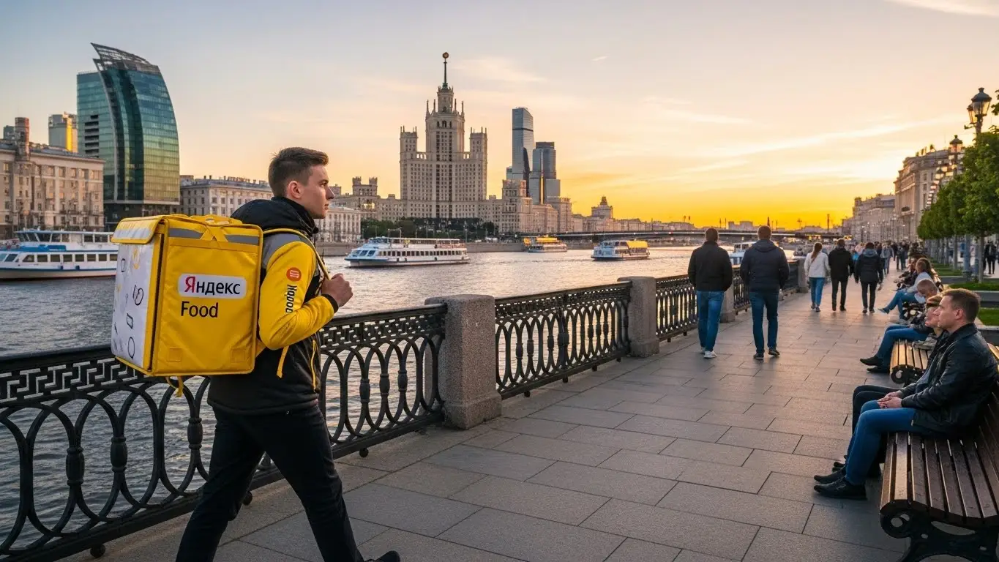
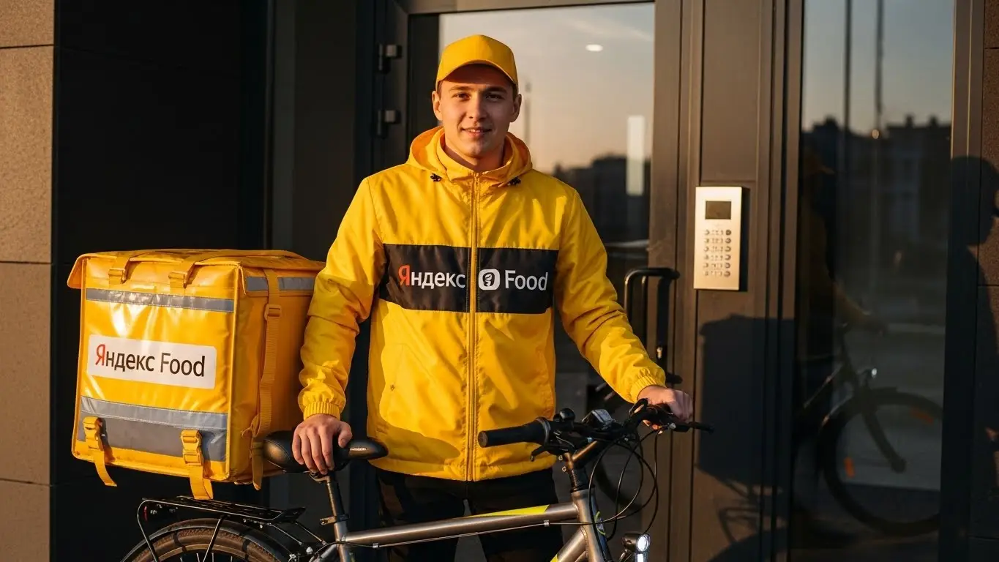
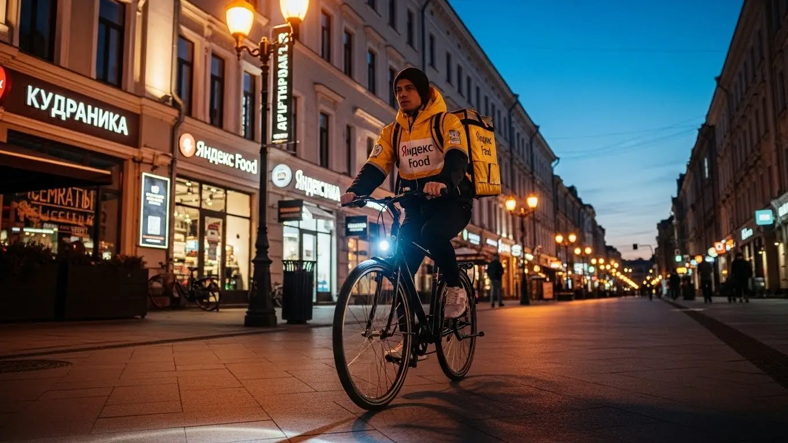
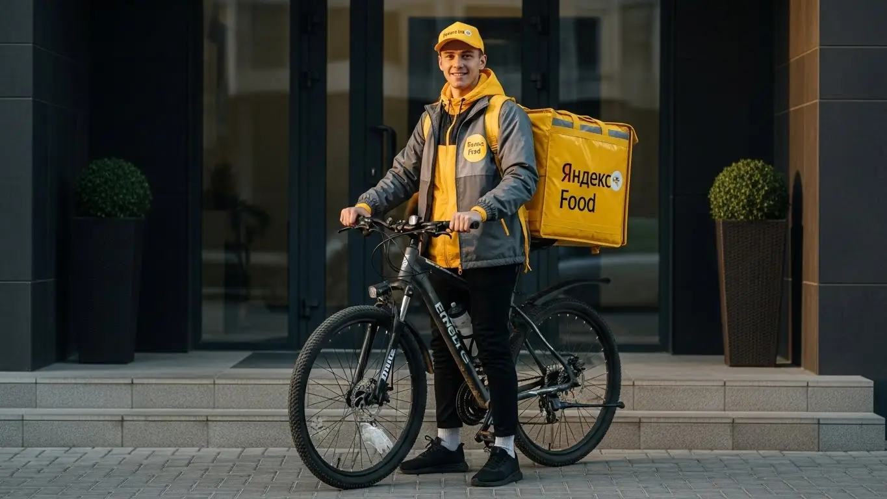

Доход и условия работы курьером Яндекс Еды в Альметьевске 2025-2026

- Работа курьером Яндекс Еды в Альметьевске: для кого эта вакансия и что вы получите
- Сколько вы будете зарабатывать курьером в Альметьевске: калькулятор дохода и разбор выплат
- Реальный заработок курьера в Альметьевске: смены и месячный доход
- График работы и форматы занятости
- Требования к кандидату и документы
- Самозанятость, налоги и юридическая чистота
- Пошаговое оформление и первый выход на линию в Альметьевске
- Пешком, на вело или на авто: что выгоднее в Альметьевске
- Районы, маршруты и «топовые» зоны заказов в Альметьевске
- Безопасность, страховка, штрафы и оплата простоя
- Плюсы и возможные минусы работы курьером в Альметьевске
- Реальные истории и отзывы курьеров из Альметьевска
- Ответы на главные вопросы о работе курьером Яндекс Еды в Альметьевске
- Короткие ответы на главные вопросы
- Итоги и ваш следующий шаг
Все города
Думаешь, работа курьером в Альметьевске — это просто крутить педали или руль и получать деньги? Так кажется ровно до первой пробки на Шевченко в час пик, до первого заказа в дальний микрорайон по убитой дороге и до первого подсчёта, сколько реально ушло на бензин. Многие горят идеей, но боятся, что заработок едва покроет ремонт машины, а штрафы съедят всю прибыль. Забудь рекламные обещания. Давай по-чесноку разберём, что такое реальная работа курьером Яндекс Еды в Альметьевске.
Большинство новичков в нашем Альмете сдуваются в первый же месяц. И не потому, что работа плохая, а потому что никто им не рассказал «внутрянку». Про то, что доход зависит не только от тебя, а от района, времени суток и твоего рейтинга. Про то, что налог самозанятого надо платить, амортизацию машины или велика — считать, а логистика в час пик по Ленина может превратить выгодный заказ в убыточный. В итоге — разочарование и потерянные деньги на одних и тех же ошибках. Чтобы избежать этого, стоит заранее изучить все детали: на официальной странице работа курьером Яндекс Еда в Альметьевске есть и калькулятор дохода, и ответы на частые вопросы, и форма для быстрой заявки.
В этом гиде я разложу всё по полочкам: какой транспорт лучше выбрать именно для альметьевских дорог, сколько чистыми остаётся в кармане после всех вычетов, и где находятся самые «хлебные» районы и часы. А ещё расскажу, как не нарваться на штраф, что делать, когда зимой всё завалило снегом, и стоит ли вообще игра свеч по сравнению с другими подработками в городе.
Меня зовут Алексей. Я сам не один год откатал с жёлтым рюкзаком по Альметьевску, а сейчас у меня свой небольшой таксопарк-партнёр, так что я знаю всю эту кухню изнутри — и со стороны курьера, и со стороны системы. Никакой воды и рекламной шелухи, только мясо, опыт и цифры.
Чтобы тебе было проще сориентироваться, вот короткий гид по ключевым темам статьи.
Что ты точно узнаешь из этого разбора
В этой статье ты ТОЧНО узнаешь:
- Сколько реально можно заработать в Альметьевске за смену и в месяц, если работать пешком, на велосипеде или на авто?
- В каких районах Альметьевска (центр, Яшьлек, Дружба) больше всего заказов и как выбирать «хлебные» зоны, чтобы не кататься впустую?
- Что выгоднее выбрать для Альметьевска — доставку пешком, на велосипеде или на своей машине, и какие у каждого способа есть подводные камни?
- За что курьера могут оштрафовать или понизить рейтинг и как работает оплата простоя, если заказов мало?
- Обязательно ли оформлять самозанятость, как это сделать за 10 минут и сколько налога придётся платить?
- Как устроен процесс от анкеты до первого заработка и что нужно, чтобы выйти на линию уже завтра?
А если тебе некогда читать всю статью — переходи сразу к заключению, где ты найдёшь короткие ответы на все эти вопросы и указания, в каких разделах искать подробности.
А для наглядности — основные цифры и факты в одной картинке.
Яндекс Еда в Альметьевске: ключевые цифры
Работа курьером Яндекс Еды в Альметьевске: для кого эта вакансия и что вы получите
Кому подойдёт эта работа в Альметьевске
Скажу прямо: работа курьером подходит не всем, но для многих это отличный вариант. В Альметьевске эта вакансия идеальна для студентов местных колледжей и филиала КНИТУ-КАИ, которым нужна подработка после пар. Деньги нужны всегда, а тут график можно подстроить под себя. Это и хороший старт для тех, у кого нет опыта: здесь минимальные требования, не нужен диплом и резюме на три страницы, а всему научат онлайн за пару часов.
Такая подработка — спасение и для тех, кому нужен дополнительный доход к основной зарплате. У многих моих знакомых с заводов сменный график, и в выходные дни они выходят на линию, чтобы закрыть кредит или накопить на отпуск. Водители, у которых машина простаивает, тоже могут превратить её в источник заработка. И конечно, это вариант для всех, кто ценит свободу: ты сам себе начальник, выбираешь, когда и сколько работать, а ежедневные выплаты получаешь сразу на карту, не дожидаясь конца месяца.
Главные преимущества для жителей районов Яшьлек, Дружба, Старый Альметьевск
Главный плюс, который многие недооценивают, — возможность работать прямо у себя в районе. Тебе не нужно тратить час на дорогу до офиса и обратно. Живёшь, например, в микрорайоне Яшьлек — включаешь приложение «Яндекс Про» и начинаешь брать заказы из ближайших кафе и магазинов. То же самое касается и жителей Дружбы или Старого Альметьевска: заказы есть везде, где есть жилые дома и заведения.
Это не только экономия времени и денег на проезд. Работая в знакомом районе, ты знаешь все короткие пути, дворы, где можно срезать, и подъезды с неудобными кодами. Это даёт тебе преимущество в скорости, а значит, ты успеваешь выполнить больше заказов за то же время. В итоге ты и зарабатываешь больше, и устаёшь меньше, потому что работаешь на своей, знакомой территории.

Кратко о доходе и условиях
Давай о главном — о доходе. В Альметьевске, если не лениться, курьер может зарабатывать от 2000 до 3500 рублей за полную смену (8–10 часов). Если нужна просто подработка на 3–4 часа вечером, можно рассчитывать на 800–1500 рублей. В месяц при полной занятости реальная зарплата выходит в среднем 45 000 – 70 000 рублей. Цифры зависят от твоего транспорта, скорости и количества отработанных часов.
Ключевые условия работы просты и понятны. Во-первых, свободный график — ты сам решаешь, когда выходить на смену через приложение «Яндекс Про». Во-вторых, ежедневные выплаты: деньги приходят на карту сразу после смены, не нужно ждать зарплату неделями. В-третьих, начать можно без опыта — всему необходимому научат на коротком онлайн-инструктаже.
Вот живой пример. У меня в парке есть водитель, Рамиль, 45 лет, работает на «Татнефти» посменно. Чтобы быстрее закрыть ипотеку, он в свои выходные выходит на линию как самозанятый автокурьер. Берёт длинные смены по 10 часов в субботу и воскресенье. В основном катается по заказам Яндекс Доставки из гипермаркета «Лента» и развозит их по всему городу. За прошлые выходные он сделал чистыми около 6500 рублей. Говорит, что это отличная добавка к основной зарплате, которая уходит чисто на ипотечный платёж.
В общем, работа курьером в сервисах Яндекса в Альметьевске — это гибкий и доступный способ заработка для студентов, людей на подработке и всех, кто ценит свободу. Главное преимущество — возможность работать рядом с домом и получать деньги каждый день. Мой совет: начни с коротких смен в своём районе, чтобы освоиться, а потом уже планируй полную занятость, если понравится.
Сколько вы будете зарабатывать курьером в Альметьевске: калькулятор дохода и разбор выплат
Из чего складывается доход курьера
Твой заработок — это не просто фиксированная ставка, а сумма нескольких частей. Важно понимать каждую из них, чтобы влиять на итоговый доход. Во-первых, это оплата за выполнение заказа. Во-вторых, доплата за расстояние — чем дальше везти заказ, тем больше платят. В-третьих, повышающие коэффициенты: в часы пик (обед, ужин), в плохую погоду или в зонах с высоким спросом стоимость заказов умножается. На карте в приложении «Яндекс Про» такие зоны подсвечиваются фиолетовым.
Кроме этого, есть бонусы за выполнение определённого количества заказов — это как премия за хорошую работу. Не стоит забывать и про чаевые, которые клиенты оставляют прямо в приложении, они полностью твои. Также есть два важных момента: оплата простоя, если ты на плановом слоте, но заказов временно нет, и возможная компенсация проезда на общественном транспорте для пеших курьеров на дальних заказах. Всё это в сумме и составляет твою зарплату.
Как пользоваться калькулятором дохода
На странице есть специальный калькулятор — это не просто игрушка, а полезный инструмент для планирования. Пользоваться им элементарно. Сначала выбираешь свой город, в нашем случае Альметьевск. Затем указываешь, как планируешь доставлять: как пеший курьер, курьер на велосипеде или на своём авто.
Дальше двигаешь ползунки: сколько часов в день и сколько дней в неделю ты готов работать. Например, 4 часа в день, 5 дней в неделю. Калькулятор на основе средних данных по городу сразу покажет тебе примерный заработок за день и за месяц. Это, конечно, прогноз, но он помогает трезво оценить, на какой доход можно рассчитывать при разных вариантах занятости.
Рассчитай свой примерный доход в Альметьевске
*Расчёт основан на средней ставке для Альметьевска и не учитывает бонусы, чаевые и повышенные коэффициенты. Реальный заработок зависит от вашей активности.
Помни, что калькулятор даёт примерные цифры. Чтобы узнать самые актуальные условия, посмотреть подробный FAQ и подать заявку, загляни на официальную страницу: работа курьером Яндекс Еда в твоём городе.
Примеры расчёта для пешего, вело- и авто‑курьера в Альметьевске
Чтобы было понятнее, давай разберём на конкретных примерах для Альметьевска.
- Пеший курьер. Допустим, ты студент и выходишь на подработку на 4 часа вечером в будни. Твоя зона — центр, улицы Ленина и Чехова, где много кафе. Заказы в основном короткие, до 1,5–2 км. За вечер ты успеешь сделать 6–8 заказов. С учётом бонусов и возможных чаевых твой доход составит примерно 800–1200 рублей за смену.
- Велокурьер. Ты решил работать в выходной день, 8 часов. На велосипеде ты мобильнее, поэтому можешь брать заказы между спальными районами, например, из центра в Яшьлек или РТС. Расстояния больше, оплата за них выше. За день можно выполнить 15–20 заказов. Заработок за такую смену может составить 2200–2800 рублей.
- Автокурьер. Ты работаешь на своей машине в плохую погоду, когда пешие и велокурьеры не так активны, а спрос взлетает. Ты можешь брать крупные заказы из гипермаркетов и доставлять их по всему городу и даже в ближайшие посёлки. За 8-часовую смену в такой день можно заработать 3000–4000 рублей, уже за вычетом бензина.
Помню парня-студента, который начинал пешим курьером. Первую неделю он работал по 3-4 часа в центре, зарабатывал по 700-900 рублей. Потом купил себе недорогой велосипед и начал брать смены по 6 часов, катаясь между центром и новыми микрорайонами. Его средний дневной доход сразу вырос до 1500-1800 рублей, потому что он стал успевать делать больше заказов на более длинные дистанции. Он быстро понял, что мобильность напрямую влияет на деньги.
Итак, твой доход — это конструктор из множества деталей: от расстояния до погоды и чаевых. Используй калькулятор для планирования, но помни, что реальный заработок зависит от твоей активности. Мой совет: не засиживайся в одной точке, а постоянно следи за картой спроса в «Яндекс Про» — двигайся в те зоны, где горит высокий коэффициент, именно там сейчас самые денежные заказы.
Реальный заработок курьера в Альметьевске: смены и месячный доход
Давай по-честному, без рекламных обещаний. Цифры, которые я приведу, — это реальный доход, который парни в моём парке и я сам видим в приложении «Яндекс Про» по итогам смен в Альметьевске. Заработок — штука нефиксированная, он зависит от тебя, твоего транспорта и умения ловить момент. Но понять, на какую зарплату можно рассчитывать, вполне реально.
Главное правило простое: чем больше город хочет есть и получать посылки, тем больше у тебя денег. Твоя задача — оказаться в нужном месте в нужное время. В Альметьевске работа курьером устроена так же, как и везде, просто со своими особенностями.
Диапазон дохода для подработки и полной занятости
Если ты ищешь подработку на пару часов после основной работы или учёбы, цифры будут одни. Если готов работать полный день — совсем другие. Важно понимать, что я говорю о суммах «грязными», до вычета налога самозанятого (6%) и расходов на топливо для автокурьеров.
Для подработки (2–4 часа в день, 3–4 раза в неделю):
- Пеший курьер: За короткую смену в 3-4 часа можно заработать 600–1000 рублей. В месяц выходит 10 000–18 000 рублей. Идеально, чтобы покрыть мелкие расходы или отложить на что-то.
- Велокурьер: На велосипеде ты быстрее, поэтому за то же время твой доход будет выше — 800–1400 рублей. В месяц это уже 15 000–25 000 рублей.
- Автокурьер: Машина даёт максимум возможностей. За вечер можно привезти 1200–2000 рублей. В месяц набегает 20 000–35 000 рублей дополнительного дохода.
При полной занятости (8–10 часов в день, 5 дней в неделю):
- Пеший курьер: В день выходит 1800–2500 рублей. За полный месяц можно заработать 40 000–55 000 рублей. Работа физически непростая, но для старта без опыта и вложений — отличный вариант.
- Велокурьер: Дневной заработок — 2200–3200 рублей. В месяц это 50 000–70 000 рублей. Ты всегда в движении и не зависишь от пробок в центре.
- Курьер на автомобиле: Самый высокий потенциальный доход. В день можно делать 3000–4500 рублей, а в особо удачные дни с высокими коэффициентами и больше. Месячный доход может достигать 70 000–95 000 рублей до вычета расходов.
Сравнение дохода в Альметьевске по типам занятости
| Тип курьера | Доход на подработке (за смену 3-4 часа) | Доход при полной занятости (в месяц) |
|---|---|---|
| Пеший | 600 – 1000 ₽ | 40 000 – 55 000 ₽ |
| Велосипед | 800 – 1400 ₽ | 50 000 – 70 000 ₽ |
| Автомобиль | 1200 – 2000 ₽ | 70 000 – 95 000 ₽ (до вычета расходов) |
В качестве примера из практики: один из моих водителей, Руслан, работает на своей «Гранте» полный день. Его доход стабильно держится в районе 80-85 тысяч в месяц «грязными». После вычета бензина и налога для самозанятых у него на руках остаётся чистая зарплата 65-70 тысяч. Он не гонится за каждым заказом, а работает с умом: знает, где и когда будут пики, и не брезгует дальними доставками, которые часто выгоднее.
В итоге, твой реальный заработок в Альметьевске напрямую зависит от выбранного формата и количества часов. Не жди золотых гор в первый же день, но при грамотном подходе доход будет стабильным и предсказуемым. Главный совет — начни с подработки, пойми, как всё устроено, а потом решай, готов ли ты заниматься этим полный день.
Как район, время суток и погода влияют на доход
Запомни три кита высокого заработка курьера: пиковые часы, плохая погода и «хлебные» районы. Если научишься это совмещать, будешь всегда с деньгами. Система платит больше не тому, кто больше устал, а тому, кто оказался там, где он нужнее всего.
Время суток. Самые выгодные заказы в Альметьевске, как и везде, — это обед (с 12:00 до 14:00) и ужин (с 18:00 до 21:00). В это время люди массово заказывают еду из кафе и ресторанов через Яндекс Еду. Пятница и суббота вечером — это вообще джекпот. В приложении «Яндекс Про» такие зоны подсвечиваются фиолетовым, и там действуют повышающие коэффициенты. Заказ, который днём стоит 150 рублей, вечером может стоить 250–300.
Погода. Дождь, снегопад или сильный мороз — твой лучший друг. Большинство курьеров предпочитают отсидеться дома, а вот количество заказов резко растёт. Спрос превышает предложение, и коэффициенты взлетают до небес. К тому же, люди в такую погоду охотнее оставляют чаевые, потому что ценят твой труд. Если не боишься промокнуть или замерзнуть, в непогоду можно за 3-4 часа заработать как за целый день.
Район. В Альметьевске больше всего заказов концентрируется в центре — улицы Ленина, Шевченко, Гагарина, а также в районе ТРЦ «Панорама». Там много кафе, ресторанов и магазинов. Но не стоит забывать про крупные спальные микрорайоны, например, «Западные ворота» или новые дома по улице Бигаш. Вечером там основной спрос. Изучи карту в приложении, смотри, где горит «фиолетовый», и двигайся туда.
Советы по увеличению заработка от опытных курьеров
Просто кататься по городу в ожидании заказа — стратегия проигрышная. Нужно работать на опережение и использовать все возможности системы. Вот несколько проверенных советов, которые помогут увеличить доход без лишних переработок.
Планируй слоты заранее. Самые выгодные слоты — вечерние и на выходных — разбирают быстро. Открывай расписание в «Яндекс Про» и бронируй их на неделю вперёд. Плановые слоты часто идут с гарантией минимального дохода: даже если заказов будет мало, сервис доплатит до определённой суммы. Это твоя страховка от простоя.
Используй карту спроса. Не сиди на месте в «тихом» районе. Постоянно смотри на карту в приложении. Видишь зону с высоким коэффициентом в паре километров от тебя? Двигайся туда. Даже 10–15 минут в пути окупятся более дорогими заказами. Со временем ты выучишь, в каких районах и в какое время обычно самый высокий спрос.
Комбинируй транспорт. Если у тебя есть и велосипед, и машина, используй их по ситуации. В час пик в центре Альметьевска курьер на велосипеде будет быстрее и манёвреннее, сможет срезать через дворы. Для дальних заказов, например, в Урсалу или Нижнюю Мактаму, или в плохую погоду лучше брать машину. Это позволит брать больше заказов и меньше уставать.

График работы и форматы занятости
Главный плюс этой работы — свободный график. Ты сам решаешь, когда и сколько работать. Никто не стоит над душой с восьми до пяти. Это идеальный вариант, чтобы совмещать с учёбой, основной работой или просто жить в своём ритме. Но чтобы эта свобода приносила деньги, нужна самодисциплина и умение планировать.
Гибкий график позволяет подстроиться под любые жизненные обстоятельства. Нужны деньги срочно — вышел на линию на весь день. Хочешь отдохнуть — просто не берёшь смены. Эта работа даёт контроль над своим временем и доходом, которого нет в офисе или на заводе.
Подработка после учёбы или основной работы
Совмещать доставку с чем-то ещё — самый популярный сценарий. Это отличный способ получить дополнительный доход, не меняя кардинально свою жизнь. Вот пара реальных примеров из Альметьевска.
Пример 1: Студент АГНИ. Парень учится на дневном. После пар, примерно с 17:00, он садится на велосипед и берёт 4-часовой слот как велокурьер. Доставляет заказы по району вокруг института и центральным улицам. За вечер спокойно делает 1000–1200 рублей. В неделю выходит 4–5 смен, что даёт ему около 20 000 рублей в месяц. Этого хватает на личные расходы и помощь родителям.
Пример 2: Работник завода. Мужчина работает по графику 2/2. В свои выходные он не сидит дома, а выходит на линию как курьер на автомобиле. Работает полные смены по 8-10 часов. За два выходных дня он зарабатывает 7000–9000 рублей. В месяц это даёт ему прибавку к зарплате в 30 000–40 000 рублей, что сопоставимо со второй зарплатой.
Пример 3: Мама в декрете. У неё есть пара свободных часов днём, когда ребёнок в садике. Она работает как пеший курьер, беря короткие доставки в своём районе. Это могут быть заказы из ближайшего магазина или кафе. Зарабатывает немного, 500–700 рублей в день, но для неё это важная возможность быть в движении и иметь свои карманные деньги, не отрываясь от семьи.
Полная занятость: как выглядит типичный день курьера
Если ты решил сделать доставку своей основной работой, будь готов к чёткому распорядку дня. Это уже не просто подработка, а полноценный труд, который требует планирования. Вот как выглядит типичный день автокурьера в Альметьевске, который работает на результат.
9:00 – 11:30. Выход на линию. Утро — время не для еды, а для доставок из магазинов вроде Яндекс Маркета и посылок от людей. День начинается с центральных районов, где расположены офисы и торговые точки. Заказов не так много, как вечером, но они стабильны.
11:30 – 14:30. Обед, первый пик. Спрос резко возрастает. Курьер перемещается ближе к скоплениям кафе на улицах Ленина и Чехова, откуда идут заказы Яндекс Еды. Заказы поступают один за другим, времени на отдых почти нет. Главное — быстро забрать и доставить, чтобы успеть взять следующий.
14:30 – 17:00. Дневное затишье. Спрос падает. Это время для обеда, заправки машины или небольшого отдыха. Некоторые в это время берут длинные, но недорогие заказы, чтобы не стоять на месте.
17:00 – 21:30. Вечер, главный пик. Начинается самое прибыльное время, поэтому курьер смещается в густонаселённые спальные районы. Люди возвращаются с работы и заказывают ужин. Коэффициенты растут, заказов очень много. Это время, когда делается основная касса за день.
21:30 – 22:30. Завершение смены. Спрос постепенно спадает. Курьер выполняет последние заказы, стараясь, чтобы последний маршрут был в сторону дома. После этого завершает слот, смотрит итоговый заработок в приложении и едет отдыхать.
Как планировать слоты и выходы через приложение «Яндекс Про»
Приложение «Яндекс Про» — твой главный рабочий инструмент. Это не просто навигатор с заказами, а центр управления твоим графиком и доходом. Чем лучше ты его освоишь, тем больше будешь зарабатывать.
Выбор слотов и зон. В приложении есть раздел «Расписание», где ты можешь выбрать и забронировать плановые слоты. Они бывают разной длительности — от 2 до 12 часов. Советую бронировать самые «хлебные» часы (18:00–22:00) и выходные дни заранее, так как их быстро разбирают. Также можно выходить на свободные слоты, когда тебе удобно, но в этом случае не будет гарантии минимального дохода.
Карта спроса. На главном экране приложения всегда есть карта города. Зоны, где заказов сейчас больше всего, подсвечиваются разными цветами — от жёлтого до фиолетового. Чем ярче цвет, тем выше спрос и больше повышающий коэффициент. Видишь «горящую» зону — двигайся туда. Сидеть и ждать заказа в «серой» зоне бессмысленно.
Пунктуальность и рейтинг. Для плановых слотов критически важно выходить на линию вовремя. Опоздание на 5–10 минут может привести к снижению твоего рейтинга или показателя Активности. Система поощряет ответственных курьеров. Высокий рейтинг даёт приоритет в распределении заказов и доступ к бонусам. Поэтому относись к этому серьёзно: если забронировал слот, будь добр выйти на смену вовремя.
Один парень-новичок у меня в парке сначала жаловался на низкий заработок. Оказалось, он просто выходил на линию, когда вздумается, и катался по своему району. Я показал ему, как смотреть карту спроса и планировать слоты на вечернее время в центре. Через неделю его дневной доход вырос почти в полтора раза. Он просто начал использовать инструменты, которые предлагает сервис для увеличения дохода.
В общем, гибкость графика — это твоё преимущество, но оно работает только в связке с дисциплиной. Используй «Яндекс Про» по максимуму: планируй смены, следи за картой спроса и будь пунктуален. Это основа стабильного и высокого дохода в работе курьером.

Требования к кандидату и документы
Многих пугает этап сбора документов и проверки, но на деле всё гораздо проще. Условия работы в Яндекс Еде созданы так, чтобы ты мог как можно быстрее начать получать заказы. Главное — соответствовать базовым требованиям и иметь под рукой небольшой пакет документов.
Возраст, гражданство и базовые условия
Начнём с основ. Чтобы стать курьером-партнёром Яндекс Еды, тебе должно быть полных 18 лет. Это строгое правило, связанное с материальной ответственностью и юридическим статусом. По гражданству тоже всё чётко: принимают граждан Российской Федерации и стран Евразийского экономического союза (ЕАЭС), куда входят Беларусь, Казахстан, Армения и Кыргызстан.
Никакого специального образования или опыта работы не требуется — всему научат в процессе короткого онлайн-обучения. Важнее твоя физическая форма. Если планируешь работать пешим курьером или на велосипеде, будь готов много двигаться. Для курьера на автомобиле, само собой, нужны водительские права и личный транспорт. И абсолютно всем понадобится смартфон на базе Android: приложение «Яндекс Про», через которое приходят заказы, работает только на этой ОС.
Какие документы нужны для работы курьером
Список документов минимальный, и скорее всего, всё необходимое у тебя уже есть. Подготовь их заранее, чтобы процесс оформления прошёл максимально быстро.
Вот что понадобится:
- Паспорт. Основной документ для подтверждения личности и возраста. Нужен будет его скан или качественное фото.
- ИНН (Идентификационный номер налогоплательщика). Он нужен для регистрации в качестве самозанятого и уплаты налогов. Если не помнишь свой номер, его легко найти за пару минут на сайте ФНС или Госуслуг.
- Банковская карта и её реквизиты. На неё будет приходить твой доход. Сервис предлагает ежедневные выплаты, так что деньги будут поступать на твой личный счёт в банке регулярно. Карта должна быть оформлена именно на тебя, использовать чужую нельзя. Подойдёт карта любого российского банка.
- Медицинская книжка. Здесь ситуация плавающая. Для доставки запечатанных заказов из ресторанов она, как правило, не требуется. Но если планируешь работать с продуктами из магазинов и дарксторов (Яндекс Лавка, Маркет), она может понадобиться. Лучше уточнить актуальные требования для работы в Альметьевске на этапе регистрации. Но если медкнижка уже есть — это будет твоим преимуществом.
Можно ли работать с 16 лет и какие есть альтернативы
Частый вопрос от молодых ребят: можно ли работать в Яндекс Еде с 16 или 17 лет? Отвечаю честно: нет, стать курьером-партнёром сервиса можно строго с 18 лет. Ограничение связано с тем, что работа предполагает полную материальную ответственность за заказы и денежные средства, а также требует оформления официального статуса самозанятого, что для несовершеннолетних сопряжено с юридическими сложностями.
Если тебе ещё нет 18, но хочется заработать, не стоит отчаиваться. В Альметьевске можно найти другие варианты подработки для подростков. Например, часто ищут промоутеров для раздачи листовок, помощников в местные кафе на летний период или расклейщиков объявлений. Это, конечно, не доставка с гибким графиком, но как временный вариант для получения первого опыта и карманных денег — вполне подойдёт. А как только исполнится 18, сможешь без проблем подать заявку в Яндекс Еду.
Был у меня в парке парень, студент-первокурсник из АГНИ. Он думал, что для работы курьером нужна кипа бумаг, как на завод. Очень удивился, когда я ему сказал, что для оформления нужен только паспорт, ИНН и карта. Свой ИНН он не помнил, но за пару минут нашёл его на Госуслугах. Вечером всё отсканировал, отправил заявку, а на следующий день уже получил доступ к заказам. Вся «бюрократия» заняла у него меньше часа.
В итоге, требования к кандидатам простые и понятные: возраст от 18 лет, гражданство РФ или ЕАЭС и базовый набор документов. Главный совет — заранее проверь свой ИНН и подготовь фото паспорта, чтобы не тратить на это время при заполнении анкеты и быстрее начать работать.
Самозанятость, налоги и юридическая чистота
Многих новичков пугает слово «самозанятость». Кажется, что это что-то сложное, связанное с налогами, отчётами и бумажной волокитой. На самом деле всё наоборот. Этот налоговый режим (НПД) специально создан, чтобы курьеры, таксисты и фрилансеры могли работать официально, просто и с минимальными налогами. Давай разберёмся, как это устроено.
Почему курьеры Яндекс Еды работают как самозанятые
Работа курьером в Яндекс Еде — это не трудоустройство в штат, а партнёрство. Ты не сотрудник с окладом, а независимый исполнитель, который сам решает, когда и сколько ему работать. Формат самозанятости (официально — «Налог на профессиональный доход» или НПД) идеально для этого подходит.
Во-первых, это даёт тебе официальный доход. Все деньги, которые ты получаешь от партнёров сервиса, — «белые». Это значит, что ты без проблем сможешь, например, взять кредит в банке или получить визу, подтвердив свой заработок. Во-вторых, никакой сложной бухгалтерии. Тебе не нужно вести отчётность или сдавать декларации. Все операции фиксируются автоматически, а чеки для сервиса формируются в приложении «Яндекс Про». В-третьих, это юридическая чистота и безопасность. Ты работаешь по договору-оферте, где прописаны все условия, и защищён законом.
Как за 10 минут оформить самозанятость через «Мой налог»
Регистрация статуса самозанятого занимает не больше 10 минут и делается прямо с телефона. Никуда ходить не нужно.
Вот простая пошаговая инструкция:
- Скачай приложение. Зайди в Google Play и скачай официальное приложение ФНС России — «Мой налог».
- Начни регистрацию. Открой приложение и выбери самый простой способ — «Регистрация по паспорту РФ».
- Отсканируй паспорт. Наведи камеру телефона на главный разворот паспорта. Приложение само распознает все данные. Проверь, чтобы всё было верно.
- Сделай селфи. Приложение попросит сделать фото лица, чтобы подтвердить твою личность. Это быстрая и стандартная процедура.
- Подтверди регион. Укажи регион, где планируешь выполнять доставки — в нашем случае, Республика Татарстан.
- Готово! После отправки данных ты практически мгновенно получишь уведомление о постановке на учёт в качестве плательщика НПД.
Весь процесс интуитивно понятен. Кроме того, часто зарегистрироваться можно прямо через приложение «Яндекс Про» или с помощью сервисов-партнёров, что ещё больше упрощает задачу.
Сколько и как платить налоги
Это самый приятный момент. Налог для самозанятого курьера — один из самых низких в стране. Ставка составляет 6% от дохода, полученного от юридических лиц (в нашем случае — от партнёров Яндекса). Если бы ты получал деньги от физлиц, ставка была бы 4%, но для доставки заказов это неактуально.
Процесс уплаты налога полностью автоматизирован. Тебе не нужно ничего считать самому. Яндекс передаёт данные о твоих доходах в налоговую. Раз в месяц, до 12-го числа, в приложении «Мой налог» появляется информация о начисленном налоге за предыдущий месяц. Тебе остаётся только нажать кнопку «Оплатить» и сделать это с банковской карты до 28-го числа. Всё. Никаких деклараций, походов в налоговую и сложных расчётов.
Один мой знакомый водитель, мужчина под 50, долго работал неофициально и боялся любых контактов с налоговой. Когда он решил стать курьером, его больше всего напрягала именно самозанятость. Я убедил его попробовать. Он зарегистрировался за 10 минут, а когда пришёл первый счёт на налог — 1800 рублей с дохода в 30 000 — был удивлён, насколько всё просто и прозрачно. Он заплатил его в один клик и сказал, что впервые в жизни почувствовал себя спокойно, зная, что работает полностью легально.
Таким образом, самозанятость — это не проблема, а удобный инструмент для работы курьером. Этот статус обеспечивает легальность, официальный доход и минимальный налог без лишней головной боли. Не бойся оформления: оно создано, чтобы упростить тебе жизнь, а не усложнить.
Пошаговое оформление и первый выход на линию в Альметьевске
Многие думают, что устроиться курьером — это долго и муторно, с кучей бумажек и собеседований. На деле условия работы гораздо проще, а весь процесс от заполнения анкеты до первого заработка в Альметьевске можно пройти за один день. Главное — не тушеваться и следовать простым шагам. Никаких начальников и отделов кадров, всё оформление проходит через смартфон.
Из практики: парень у нас в парке, студент АГНИ, решил подработать. Заполнил анкету утром, пока сидел на паре. К обеду прошёл обучение и тесты. После учёбы заехал в офис партнёра за термосумкой, и уже в 18:00 вышел на свой первый слот в районе улицы Ленина. За три часа сделал 5 заказов, и его чистый доход составил около 800 рублей, не считая чаевых. Говорит, был удивлён, насколько всё просто и быстро.
В общем, процесс регистрации — это не барьер, а простая формальность. Главное — твоё желание. Если оно есть, то уже сегодня ты можешь стать курьером и увидеть первый доход на своём балансе. Не откладывай на завтра то, что можно сделать за 15 минут онлайн.
Шаг 1–2: анкета и онлайн‑обучение
Первый этап — это короткая анкета на сайте. Ничего сложного: ФИО, номер телефона, город — Альметьевск. Указывай реальные данные, так как это базовые требования для дальнейшей проверки документов. После анкеты тебе предложат скачать приложение «Яндекс Про» — твой главный рабочий инструмент. В нём и будет проходить всё дальнейшее оформление и работа.
Как только зайдёшь в приложение, система предложит пройти небольшое онлайн-обучение. Это не нудные лекции, а короткие видео и тексты с картинками. Тебе расскажут об основах: как принимать заказы, как общаться с клиентами и поддержкой, как пользоваться термосумкой. В конце каждого блока — небольшой тест из 3–5 вопросов, чтобы убедиться, что ты всё понял. Отнесись к этому серьёзно, особенно к блоку про безопасность — это в твоих же интересах.
Шаг 3: получение сумки и доступа к заказам в Альметьевске
После успешного обучения и проверки документов остаётся последний шаг — получить экипировку. Главный элемент — это фирменная термосумка или термокороб. Без неё к заказам из ресторанов Яндекс Еды и магазинов не допустят, так как важно сохранять температуру блюд. В Альметьевске сумку можно получить в офисе партнёра-таксопарка или в специальных центрах для курьеров.
Точный адрес, где можно забрать экипировку, появится прямо в приложении «Яндекс Про» после того, как твоя анкета будет одобрена. Не нужно ничего искать самому — система покажет ближайшую к тебе точку и её график работы. Как только ты получишь сумку и отметишь это в приложении, твой профиль полностью активируют, и ты увидишь на карте доступные заказы и слоты.
Шаг 4: первый слот и первый доход
С активным профилем и сумкой ты готов к работе. Теперь нужно выбрать свой первый рабочий интервал — слот. Слоты бывают разной длительности, от 2 до 12 часов, что подтверждает свободный график. Для начала я советую взять короткий слот на 3–4 часа, чтобы втянуться в процесс. Выбирай время, когда в городе много заказов — обычно это обед с 12:00 до 15:00 и вечер с 18:00 до 21:00.
Лучше всего для первого раза выбрать тот район Альметьевска, который ты хорошо знаешь. Например, если живёшь в микрорайоне «Яшьлек», начинай оттуда. Так ты будешь чувствовать себя увереннее, не будешь плутать и тратить время на навигатор. Выходишь на линию, приложение находит тебе первый заказ, ты его выполняешь, и первый доход сразу же поступает на твой баланс в «Яндекс Про». Всё, ты в деле.
Пешком, на вело или на авто: что выгоднее в Альметьевске
Выбор транспорта — одно из ключевых решений, которое напрямую влияет на твой доход и комфорт. В Альметьевске, городе не самом большом, но с разной плотностью застройки и рельефом, каждый способ доставки имеет свои плюсы и минусы. Нельзя однозначно сказать, что лучше — всё зависит от твоих целей, физической формы и того, в каких районах ты планируешь работать.
Пеший курьер хорош в центре, где всё рядом, но много не унесёшь и быстро устанешь. Велосипед даёт скорость и манёвренность в спальных районах, но зависит от погоды и твоей выносливости. Работа на своем авто — это комфорт, большие расстояния и крупные заказы, но есть расходы на бензин и обслуживание. Важно трезво оценить свои возможности и особенности города, чтобы выбрать оптимальный вариант.
Из практики: у меня в парке работает водитель-курьер, который в хорошую погоду пересаживается на велосипед. Утром и вечером, в часы пик, он на машине развозит заказы по всему городу и в пригород, например, в Нижнюю Мактаму. А днём, когда пробок меньше и погода хорошая, берёт велосипед и катается по плотным жилым кварталам. Такой гибридный подход позволяет ему максимизировать заработок, используя сильные стороны каждого вида транспорта.
Сравнение форматов доставки в Альметьевске
| Параметр | Пеший курьер | Велокурьер | Водитель-курьер |
|---|---|---|---|
| Зоны работы | Центр города, улицы Ленина, Чехова, ТЦ «Панорама» | Спальные районы («Яшьлек», «Дружба»), парковые зоны | Весь город, промзоны, пригороды (Тихоновка, Урсала) |
| Средняя скорость | Низкая (4-5 км/ч) | Средняя (15-20 км/ч) | Высокая (зависит от пробок) |
| Расходы | Минимальные (удобная обувь) | Низкие (обслуживание велосипеда) | Высокие (бензин, амортизация, страховка) |
| Тип заказов | Небольшие, на короткие расстояния | Средние, между соседними кварталами | Крупные, на дальние расстояния, из гипермаркетов |
| Зависимость от погоды | Высокая | Высокая | Низкая |
В итоге, выбор транспорта — это компромисс между скоростью, расходами и зоной покрытия. Новичку без машины я бы советовал начать с велосипеда — это золотая середина. Если же у тебя есть авто и ты готов работать в часы пик и плохую погоду, то твой доход сможет быть значительно выше.
Пеший курьер: для центра и плотной застройки в Альметьевске
Формат пешего курьера идеально подходит для центральной части Альметьевска. Здесь, в районе улиц Ленина, Гагарина, Чехова, очень высокая плотность застройки. Рестораны, кафе и магазины находятся буквально в паре шагов друг от друга, а клиенты живут в соседних домах. На машине тут часто не развернёшься из-за узких дворов и нехватки парковок, а пешком можно срезать путь и доставить заказ быстрее.
Этот вариант хорош для тех, кто живёт в центре или рядом с ним. Не нужно тратиться на транспорт, а сама работа превращается в полезную прогулку. Основные заказы будут поступать из зоны вокруг ТЦ «Панорама» и городского парка им. 60-летия нефти Татарстана. Конечно, много заказов за час не сделаешь, и доход будет ниже, чем у курьеров на транспорте, но для старта или неспешной подработки — это отличный вариант.
Велокурьер: быстрые доставки между спальными районами
Работа велокурьером — это, на мой взгляд, самый сбалансированный вариант для Альметьевска. Такой формат даёт скорость, манёвренность и позволяет работать на более длинных дистанциях, чем пешком. Ты не зависишь от пробок, можешь срезать через парки и дворы, а расходы на обслуживание велосипеда минимальны. Плюс это отличная физическая нагрузка — по сути, оплачиваемый фитнес.
Велодоставка особенно выгодна в густонаселённых спальных районах, таких как «Яшьлек» или «Дружба». Там много новостроек, а значит, и много потенциальных клиентов. Расстояния между домами и магазинами уже не такие короткие, как в центре, и велосипед помогает преодолевать их быстро. Ты сможешь выполнять больше заказов в час, и, соответственно, твой заработок будет выше без трат на бензин.
Водитель‑курьер: заказы по всему городу и пригороду Нижняя Мактама, Тихоновка
Работа водителем-курьером на своем авто открывает максимум возможностей. Ты сможешь брать самые дорогие и дальние заказы, которые недоступны пешим и велосипедистам. Это доставка в отдалённые районы города, промышленные зоны и в пригороды, такие как Нижняя Мактама, Тихоновка или Урсала. Кроме того, на машине можно выполнять крупные заказы из гипермаркетов по тарифам Яндекс Доставки, которые физически не унести в руках.
Особенно выгодно работать на авто в плохую погоду — дождь, снег, сильный мороз. В это время количество пеших и велокурьеров на линии резко сокращается, а спрос на доставку, наоборот, растёт. Включаются повышенные коэффициенты, и стоимость каждого заказа может увеличиваться в 1,5–2 раза. Да, есть расходы на топливо и амортизацию, но при грамотном подходе доход водителя-курьера всегда будет самым высоким.
Районы, маршруты и «топовые» зоны заказов в Альметьевске
Чтобы не кататься вхолостую, а стабильно получать доход, нужно понимать, где и когда в Альметьевске есть спрос. Город не такой большой, как мегаполисы, но и здесь есть свои «рыбные места». Главное правило — быть там, где люди голодны или хотят что-то купить: это обеденное время в деловых кварталах, вечера и выходные у торговых центров и в спальных районах.
Со временем ты начнёшь чувствовать ритм города, но для начала запомни основные точки притяжения. Это поможет тебе с самого старта выстраивать смены так, чтобы заработок был максимальным, а пустой пробег — минимальным. Не ленись изучать карту в приложении «Яндекс Про» перед началом слота, она твой главный помощник.
Где больше всего заказов: ТРЦ, бизнес-центры и туристические места
Самые выгодные зоны с повышенными коэффициентами — это, конечно, центр города. В обеденный перерыв, примерно с 12:00 до 15:00, основной поток заказов идёт из офисов и деловых центров в районе улиц Ленина, Гафиатуллина и проспекта Тукая. Сотрудники заказывают бизнес-ланчи, и здесь всегда есть работа для пеших и велокурьеров, которым проще передвигаться в плотном трафике.
Вечером и в выходные дни эпицентр смещается к крупным торговым центрам. В первую очередь это ТРЦ «Панорама» и ТЦ «Западный». Люди отдыхают, ходят по магазинам, а потом заказывают еду из фуд-кортов домой. Также стабильный спрос есть в районе Каскада прудов и площади Нефтяников, особенно в тёплое время года, когда там много гуляющих. В этих зонах часто действуют «фиолетовые» коэффициенты, которые могут увеличить стоимость заказа в 1,5–2 раза.
Работа в своём районе: примеры для популярных жилых кварталов
Не обязательно каждый раз ехать в центр, чтобы хорошо заработать. В Альметьевске много крупных спальных районов, где достаточно своих точек притяжения — кафе, пиццерий, суши-баров и магазинов. Например, в микрорайоне «Яшьлек» или в районе проспекта Строителей всегда есть заказы, особенно в вечернее время, когда люди возвращаются с работы и не хотят готовить.
Работая в своём районе, ты экономишь время и деньги на дорогу до стартовой точки. Ты отлично знаешь все дворы и короткие пути, что даёт преимущество в скорости доставки. К тому же в спальниках часто заказывают из продуктовых магазинов — это отличный вариант для стабильной подработки, так как заказы, как правило, не самые тяжёлые, но регулярные. Главное — выбрать для старта район с плотной жилой застройкой и наличием хотя бы нескольких популярных заведений.
Как выбирать зоны и слоты в «Яндекс Про», чтобы не мотаться впустую
Приложение «Яндекс Про» — твой главный инструмент планирования. Перед тем как выбрать слот, открой карту спроса. Она подсвечивается разными цветами: от жёлтого до тёмно-фиолетового. Чем ярче и темнее цвет, тем выше спрос в этой зоне прямо сейчас, а значит, выше и повышающий коэффициент к стоимости заказа. Старайся начинать смену в таких «горящих» зонах.
Планируй маршруты с умом. Если тебе пришёл заказ из центра на окраину, посмотри на карту — возможно, рядом с точкой доставки есть зона с хорошим спросом. Не спеши возвращаться в центр пустым. Лучше подождать 10–15 минут заказ в новом месте. Так ты избежишь холостого пробега, который съедает и время, и топливо, если ты автокурьер. Со временем ты научишься выстраивать целые цепочки заказов, перемещаясь из одной выгодной зоны в другую.
Вот недавний пример из практики. Парень-автокурьер взял вечерний слот в субботу. Начал у «Панорамы», где был пик, и сделал три хороших заказа с высоким коэффициентом. Последний заказ увёл его в район РТС. Вместо того чтобы гнать обратно в центр, он посмотрел по карте, что в соседнем микрорайоне «Западные ворота» тоже горит фиолетовая зона — люди активно заказывали пиццу. Он переместился туда и до конца смены отработал там, выполнив ещё четыре заказа. В итоге за 4 часа его заработок составил около 2000 рублей, потому что он не делал пустых прогонов, а следовал за спросом.
Безопасность, страховка, штрафы и оплата простоя
Работа курьером, как и любая другая, связана с определёнными правилами и рисками. Но здесь важно понимать, что ты не остаёшься один на один с проблемами. Сервис предоставляет серьёзную поддержку: от бесплатной страховки на время смены до оплаты простоя, когда заказов мало. Это создаёт подушку безопасности, которой нет у многих, кто работает «на себя».
С другой стороны, есть и ответственность. Система работает чётко: выполняешь стандарты — получаешь хороший доход и бонусы. Нарушаешь — можешь получить штраф или снижение рейтинга. Давай по-честному разберёмся, как всё устроено, чтобы ты был готов ко всему и знал, как действовать в любой ситуации.
Бесплатная страховка на сменах и что она покрывает
Один из главных плюсов работы с Яндекс Едой — это бесплатное страхование жизни и здоровья на всё время, пока ты на активном слоте. Неважно, пеший ты курьер, велокурьер или автокурьер. Как только ты нажимаешь кнопку «На линии», страховка начинает действовать. Это не просто формальность, а реальная защита.
Что она покрывает? Страховая сумма достигает 2 миллионов рублей и распространяется на травмы, полученные во время доставки. Например, если велокурьер упал и сломал руку, или пеший поскользнулся зимой и получил ушиб, страховка покроет расходы на лечение. Для этого нужно сразу же сообщить о случившемся в службу поддержки через приложение и следовать их инструкциям. Это даёт уверенность, что в случае неприятности ты не останешься без помощи и денег.
Правила безопасности на дороге и при доставке
Банальные вещи, но о них нужно помнить всегда. Если ты пеший курьер, переходи дорогу только по пешеходному переходу и на зелёный свет, даже если опаздываешь. В тёмное время суток носи светоотражающие элементы. Для велокурьеров обязательны шлем и фонари, а также знание ПДД в части движения на велосипеде. Не гоняй по тротуарам, распугивая прохожих.
Автокурьерам напоминать про ПДД смысла нет, но скажу одно: не торопись. Лучше приехать на 5 минут позже, но целым, чем попасть в ДТП. В плохую погоду — дождь, снег, гололёд — снижай скорость вдвое. Кроме того, аккуратно обращайся с заказом: надёжно закрепи его в термосумке, чтобы ничего не пролилось и не помялось. Клиент ждёт свой суп горячим, а не разлитым по пакету.
Какие бывают штрафы и как их избежать
Штрафы и снижение рейтинга — это крайние меры, которые применяют за серьёзные или систематические нарушения. Никто не будет наказывать за единичное опоздание на 5 минут из-за пробки, если ты предупредил поддержку. Чаще всего проблемы возникают из-за нескольких вещей: грубость клиенту или сотруднику ресторана, порча заказа по неосторожности, регулярные опоздания на плановые слоты или невыход на них без предупреждения.
Как этого избежать? Всё просто. Будь вежлив, даже если клиент не в настроении. Перед тем как забрать заказ из ресторана, проверь комплектацию и целостность упаковки. Планируй своё время с запасом, чтобы не опаздывать. Если понимаешь, что не успеваешь на слот, отмени его заранее через приложение. По сути, достаточно просто соблюдать условия сервиса и добросовестно выполнять свою работу, и никаких штрафов не будет.
Что такое оплата простоя и как она защищает ваш доход
Это одна из ключевых фишек, которая выгодно отличает Яндекс Еду от многих других сервисов. «Оплата простоя», или гарантия минимального дохода, — это твоя страховка от отсутствия заказов. Работает она на плановых слотах. Ты выбираешь определённое время и зону, и если за час твой заработок на заказах оказывается ниже установленной минимальной планки, сервис доплачивает тебе разницу.
Например, минимальная гарантированная оплата в час составляет 200 рублей. Ты был на линии, но за этот час выполнил всего один короткий заказ на 120 рублей. В этом случае сервис автоматически доначислит тебе 80 рублей, чтобы твой доход за этот час составил те самые 200. Это очень важная вещь, которая защищает твой заработок в часы низкого спроса, например, днём в будни. Ты можешь быть уверен, что не потратишь время зря.
Был у меня случай с новичком. Он взял слот во вторник с 15:00 до 18:00, не самое пиковое время. За первые полтора часа прилетело всего два заказа, и он уже начал нервничать, что зря вышел. По итогу смены его доход от заказов был ниже гарантированного минимума, и система доплатила ему почти 400 рублей. В итоге он получил справедливую оплату за своё время, проведённое на линии.
Плюсы и возможные минусы работы курьером в Альметьевске
Любая работа — это палка о двух концах. Где-то платят хорошо, но требуют сидеть в офисе от звонка до звонка. Где-то график свободный, но доход нестабильный. Работа курьером в Яндекс Еде — не исключение. Здесь есть свои весомые плюсы, которые многих привлекают, но и сложности, о которых лучше знать на берегу. Давай честно разберём, что к чему, чтобы ты мог принять взвешенное решение.
Сильные стороны работы курьером в Альметьевске
Главное, за что ценят эту работу — свобода и быстрые деньги. Ты сам себе начальник и сам выстраиваешь свой график: решаешь, когда выходить на линию, сколько часов работать и когда сделать выходной. Никто не стоит над душой. Если нужны деньги срочно, можешь отработать плотный слот вечером и получить выплату на карту — для самозанятых доступны ежедневные выплаты. Это особенно выручает, когда появляются непредвиденные расходы.
Кроме того, ты не привязан к одному месту. Можно выбрать для работы свой район, где знаешь каждый двор, и доставлять заказы рядом с домом. Не нужно тратить время и деньги на дорогу до офиса через весь Альметьевск. Плюс, ты всегда под защитой: на время смены действует бесплатная страховка жизни и здоровья. А весь доход официальный, так как работа идёт через самозанятость — никаких «серых» зарплат в конверте, всё чисто и по закону.
С какими сложностями чаще всего сталкиваются курьеры
Будем честны, работа на ногах — это физическая нагрузка, особенно для пеших и велокурьеров. Целый день на свежем воздухе звучит здорово, но погода в Альметьевске бывает разной: и ледяной ветер зимой, и жара летом, и проливные дожди. К таким условиям нужно быть готовым: иметь хорошую непромокаемую одежду, удобную обувь и термобельё для морозов. Автокурьерам в этом плане проще, но и у них свои заботы — пробки в час пик и поиск парковки.
Иногда бывают простои, когда заказов мало. Да, сервис компенсирует ожидание, но это всё равно не так выгодно, как постоянное движение. Ещё один момент — общение с людьми. 99% клиентов — адекватные и вежливые, но изредка попадаются и недовольные. Тут главное — сохранять спокойствие, не вступать в конфликт и, если что, сразу писать в службу поддержки через приложение Яндекс Про. Они помогут разрулить ситуацию.
Кому такая работа подходит, а кому лучше поискать другой формат
Эта работа идеально подходит для активных и самостоятельных людей. Если ты не любишь сидеть на месте, ценишь свободу, умеешь сам себя организовать и тебе важен гибкий график — это твой вариант. Студенты, которые совмещают с учёбой, водители, ищущие подработку, или те, кто временно остался без основной работы, находят здесь отличную возможность заработать. Главное — быть выносливым и ответственным.
С другой стороны, если ты предпочитаешь стабильность офисной жизни, предсказуемый график с 9 до 18, фиксированный оклад и не любишь физическую активность, то лучше поискать что-то другое. Работа курьером требует определённой стрессоустойчивости и готовности к разным ситуациям на дороге и с клиентами. Тем, кто ищет спокойную и размеренную деятельность в помещении, такой формат вряд ли подойдёт.
Из практики: у меня был парень, начинал велокурьером в сентябре. Поначалу всё шло отлично, зарабатывал хорошо, катаясь по центру. Но как только в ноябре ударили первые серьёзные морозы, он скис. Заказов в плохую погоду много, коэффициенты высокие, а работать физически тяжело. Он взял паузу, подкопил и через пару месяцев пересел на старенькую «четырнадцатую». И дело пошло совсем по-другому: в снегопад он стал одним из самых востребованных курьеров на своём авто и за вечер делал столько, сколько раньше за два дня на велосипеде.
Краткий вывод: Работа курьером даёт уникальную гибкость и возможность получать деньги каждый день. Однако она требует физической выносливости и готовности работать в любую погоду. Перед тем как начать, честно оцени свои силы и подумай, что для тебя важнее: свобода и движение или стабильность и комфорт офиса.
Реальные истории и отзывы курьеров из Альметьевска
Теория — это хорошо, но лучше всего о работе говорят реальные люди, которые каждый день выходят на линию в нашем городе. Я пообщался с несколькими ребятами, чтобы ты увидел картину с разных сторон.
История студента Альметьевского государственного нефтяного института, который совмещает учёбу и доставку
«Меня зовут Айдар, я на третьем курсе в АГНИ. Живу в общежитии, так что деньги нужны всегда. Работаю велокурьером уже полгода. Мой график простой: выхожу на 3-4 часа по вечерам в будни, после пар, и беру один полный слот на 8 часов в субботу или воскресенье. В основном катаюсь в центре — улицы Ленина, Шевченко, Чехова. Там много кафе, и заказы идут один за другим, далеко ехать не приходится. В среднем за неделю доход выходит 6-8 тысяч рублей. Этих денег вполне хватает на личные расходы, чтобы не просить у родителей. Главное — не лениться и выходить на линию регулярно, даже если погода не очень».
Опыт автокурьера, который выходит в пиковые часы
«Я работаю водителем, зовут Руслан. Основная работа по сменному графику, поэтому свободного времени хватает. Решил, что подработка в Яндекс Еде на своей машине — отличный вариант. Выходить на целый день мне неудобно, поэтому я выбрал для себя пиковые часы: с 12 до 14 и с 18 до 21. В это время всегда повышенный спрос, хорошие коэффициенты. Езжу по всему городу, от старого центра до новых микрорайонов вроде „Алсу“. На автомобиле удобно брать большие и дальние заказы, которые пешим не отдают. Такой формат меня полностью устраивает: за 4-5 часов в день я зарабатываю как за полноценную смену на многих других работах, при этом не сильно устаю и успеваю заниматься своими делами».
Мнение пешего или вело‑курьера о работе в центре и спальниках
«Я Карина, доставляю заказы пешком, иногда на велосипеде. В центре Альметьевска работать нравится: заказы короткие, рестораны на каждом шагу, постоянно в движении. Но есть и минусы — много людей, приходится лавировать в толпе, особенно в районе ТЦ „Панорама“. В спальных районах, например, на улице Гафиатуллина, всё спокойнее. Там меньше суеты, можно спокойно идти и слушать музыку. Правда, расстояния между точками могут быть больше. Я для себя нашла баланс: в будни днём работаю в центре, а по вечерам и в выходные выбираю слоты в спальниках через приложение Яндекс Про. Так и не надоедает, и заработок стабильный».
Краткий вывод: Как видишь, в Альметьевске каждый находит свой формат работы курьером. Студенты успешно совмещают доставку с учёбой, водители используют пиковые часы для максимального заработка, а пешие курьеры находят плюсы и в центре, и в спальных районах. Главное — понять свой ритм и выбрать те условия работы, которые подходят именно тебе.
Ответы на главные вопросы о работе курьером Яндекс Еды в Альметьевске
Ответы на ключевые вопросы кандидатов
Нужно ли оформлять самозанятость и как платить налоги?
Да, обязательно. Работа курьером в Яндекс Еде — это официальная деятельность, поэтому все оформляют самозанятость. Пугаться этого не стоит: оформление занимает 10 минут через приложение «Мой налог». Налог составляет 6% с дохода от Яндекса, он рассчитывается и списывается автоматически. Никакой бухгалтерии, отчётов и походов в налоговую — всё прозрачно и легально.
Какой телефон и интернет нужны для работы курьером?
Для работы нужен смартфон на базе Android, так как приложение «Яндекс Про» работает только на этой ОС. iPhone не подойдёт. Сам телефон не обязательно должен быть последней модели, главное — чтобы он стабильно держал заряд, имел работающий GPS-модуль и поддерживал 4G-интернет. Связь должна быть надёжной. Советую сразу обзавестись пауэрбанком — в активный день батарея садится быстро.
Что будет, если в смену мало заказов — как работает оплата простоя?
Если ты вышел на запланированный слот, а заказов по какой-то причине мало, ты не останешься с пустым карманом. Система гарантирует минимальную оплату за час — это и есть та самая оплата простоя, даже если ты просто ждёшь заказ. У сервиса есть финансовая подушка безопасности, что особенно важно для новичков.
Есть ли в Яндекс Еде штрафы и за что их могут применить?
Система штрафов есть, но это скорее набор стандартов качества. Никто не будет наказывать за мелочи. Штрафы или снижение приоритета могут применить за серьёзные нарушения: регулярные опоздания на плановые слоты, порчу заказа по своей вине, грубость клиенту или сотруднику ресторана. По сути, если ты работаешь ответственно и вежливо, то со штрафами не столкнёшься.
Сколько реально можно заработать курьером в Альметьевске и чем эта вакансия лучше других сервисов?
Реальный доход в Альметьевске зависит от тебя: как работаешь, сколько часов и на чём. На подработке по 4 часа в день можно делать 1500–2000 рублей. Курьер на автомобиле за полную 8–10-часовую смену может заработать и 4000–5000 рублей. Главное отличие от многих других сервисов — это мощная экосистема Яндекса, которая даёт стабильный поток заказов не только из ресторанов, но и из Лавки и Маркета. Плюс технологичное приложение «Яндекс Про» и финансовые гарантии вроде оплаты простоя и бесплатной страховки на время смены, чего нет у многих конкурентов.
Можно ли работать без опыта и что будет на обучении?
Опыт работы не требуется совсем. Большинство ребят приходят с нуля. Перед выходом на линию ты пройдёшь короткое и понятное онлайн-обучение. Это несколько видеороликов и небольшой тест в конце. Там расскажут, как пользоваться приложением «Яндекс Про», как правильно общаться с клиентами и ресторанами, как действовать в нестандартных ситуациях. Весь процесс занимает от силы час.
Берут ли с 16–17 лет и какие есть ограничения по возрасту?
Строго с 18 лет. Чтобы стать курьером в Яндекс Еде, нужно оформить статус самозанятого, а это по закону возможно только с совершеннолетия. Поэтому, если тебе 16 или 17, придётся немного подождать. Других верхних ограничений по возрасту нет — главное, чтобы ты был в хорошей физической форме и мог справляться с нагрузкой.
Короткие ответы на главные вопросы
Собрали здесь ключевые моменты из статьи в формате короткой шпаргалки. Если что-то забудешь — заглядывай сюда.
Короткие ответы: главное из статьи по существу
Короткие ответы на ключевые вопросы
Сколько реально можно заработать в Альметьевске за смену и в месяц, если работать пешком, на велосипеде или на авто?
На подработке (3–4 часа) можно получать 800–1500 ₽ за смену. При полной занятости месячный доход составляет 45 000 – 70 000 ₽, а для автокурьеров может достигать 95 000 ₽ до вычета расходов. Заработок напрямую зависит от количества часов, транспорта и умения работать в часы пик.
→ Подробнее читай в разделе «Реальный заработок курьера в Альметьевске: смены и месячный доход».В каких районах Альметьевска (центр, Яшьлек, Дружба) больше всего заказов и как выбирать «хлебные» зоны, чтобы не кататься впустую?
Больше всего заказов в центре (улицы Ленина, Шевченко) и у ТРЦ «Панорама». Вечером спрос смещается в спальные районы, такие как Яшьлек и Дружба. Чтобы не простаивать, следи за картой спроса в приложении «Яндекс Про» и двигайся в «фиолетовые» зоны с повышенными коэффициентами.
→ Подробнее читай в разделе «Районы, маршруты и «топовые» зоны заказов в Альметьевске».Что выгоднее выбрать для Альметьевска — доставку пешком, на велосипеде или на своей машине, и какие у каждого способа есть подводные камни?
Пеший формат подходит для плотной застройки в центре. Велосипед — сбалансированный вариант для спальных районов, быстрый и без затрат на топливо. Авто даёт самый высокий доход за счёт дальних заказов и работы в плохую погоду, но требует расходов на бензин и амортизацию.
→ Подробнее читай в разделе «Пешком, на вело или на авто: что выгоднее в Альметьевске».За что курьера могут оштрафовать или понизить рейтинг и как работает оплата простоя, если заказов мало?
Штрафы и снижение рейтинга применяют за серьёзные нарушения: грубость, порчу заказа, регулярные опоздания на плановые слоты. Оплата простоя — это гарантия минимального дохода в час на плановых слотах: если заказов мало, сервис доплатит разницу до установленной суммы.
→ Подробнее читай в разделе «Безопасность, страховка, штрафы и оплата простоя».Обязательно ли оформлять самозанятость, как это сделать за 10 минут и сколько налога придётся платить?
Да, самозанятость обязательна для официальной работы. Она оформляется за 10 минут через приложение «Мой налог» по паспорту. Налог составляет 6% от дохода, рассчитывается и уплачивается автоматически, без сложной отчётности.
→ Подробнее читай в разделе «Самозанятость, налоги и юридическая чистота».Как устроен процесс от анкеты до первого заработка и что нужно, чтобы выйти на линию уже завтра?
Нужно заполнить анкету на сайте, пройти короткое онлайн-обучение с тестами и получить термосумку в офисе партнёра. Сразу после этого профиль активируют, и можно выбирать первый слот в приложении «Яндекс Про». Весь процесс может занять меньше одного дня.
→ Подробнее читай в разделе «Пошаговое оформление и первый выход на линию в Альметьевске».
Для полного понимания темы рекомендую прочитать всю статью — там ты найдёшь примеры, сравнения и дельные советы из практики.
Итоги и ваш следующий шаг
Краткие выводы по работе курьером в Альметьевске
Работа курьером в Яндекс Еде в Альметьевске — это реальная возможность зарабатывать от 40 до 80 тысяч рублей в месяц, в зависимости от занятости и способа передвижения. Главные плюсы — это свободный график, ежедневные выплаты на карту и прозрачные условия работы. В отличие от многих альтернатив, здесь есть важные гарантии: оплата простоя, даже если заказов мало, и бесплатная страховка на сменах. Это не просто подработка, а полноценная работа с понятными правилами и стабильным доходом, доступная каждому без опыта.
Как сделать первый шаг уже сегодня
Начать проще, чем кажется. Никаких долгих собеседований и бюрократии. Вот простой план:
- Заполни анкету. Это займёт 5–10 минут, нужны только базовые данные.
- Подготовь документы. Тебе понадобится паспорт и ИНН для оформления самозанятости.
- Пройди онлайн-обучение. Посмотри короткие видео и сдай простой тест прямо со смартфона.
- Получи термокороб и выбери первый слот. После активации ты сможешь выбрать удобное время и район в приложении «Яндекс Про» и сразу выйти на линию.
Весь процесс от анкеты до первого заработка может занять всего один день. Не откладывай, если деньги нужны уже сейчас.